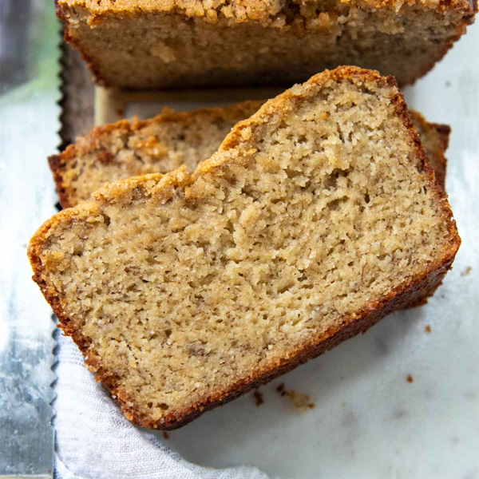

ALMOND FLOUR BANANA BREAD
1 hour 5 minutes
This almond flour banana bread recipe creates a moist, gluten-free loaf sweetened naturally with ripe bananas, with a light, nutty flavor perfect for a healthy treat.
RETURN
List of ingredients
3 very ripe medium bananas, mashed (this should measure to be 1 ¼ cups mashed banana)
3 eggs
3 tablespoons unsweetened almond milk
1 teaspoon vanilla extract
2 ½ cups packed blanched fine almond flour (I use Bob's Red MIll)
½ cup flaxseed meal
1 teaspoon cinnamon
1 teaspoon baking soda
½ teaspoon salt
desired nuts
Steps
- Preheat oven to 350°F and line a loaf pan with parchment paper.
- Mix mashed bananas, eggs, honey, vanilla, and almond butter in a bowl.
- Add almond flour, baking soda, cinnamon, and salt, then stir until well combined.
- Fold in chocolate chips or nuts if desired.
- Pour the batter into the pan and smooth the
- Bake for 50-60 minutes, until golden and a toothpick comes out
- Let cool in the pan, then transfer to a wire rack.